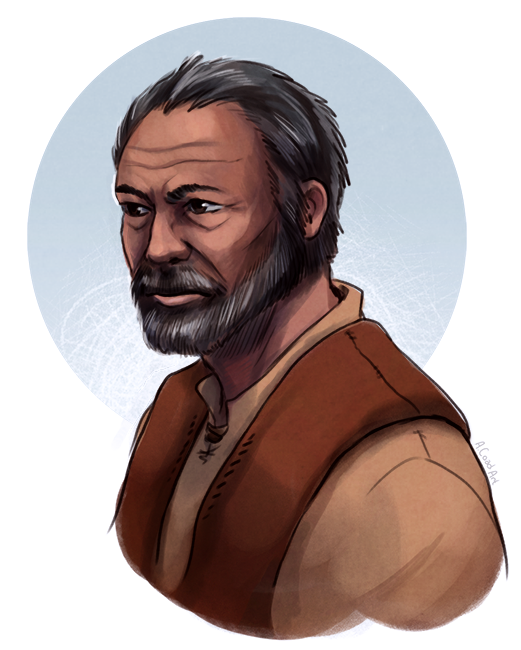

Teft
| Died | Vevishev 1175 |
|---|---|
| Abilities | Windrunner, Shardbearer |
| Bonded With | Phendorana |
| Groups | Knights Radiant (Windrunner), Bridge Four, Envisagers (formerly), Sadeas army (formerly), Kholin army |
| Residence | Urithiru |
| Nationality | Alethi |
| Homeworld | Roshar |
| Universe | Cosmere |
| Introduced In | The Way of Kings |

by Ashley Coad
information from The Coppermind